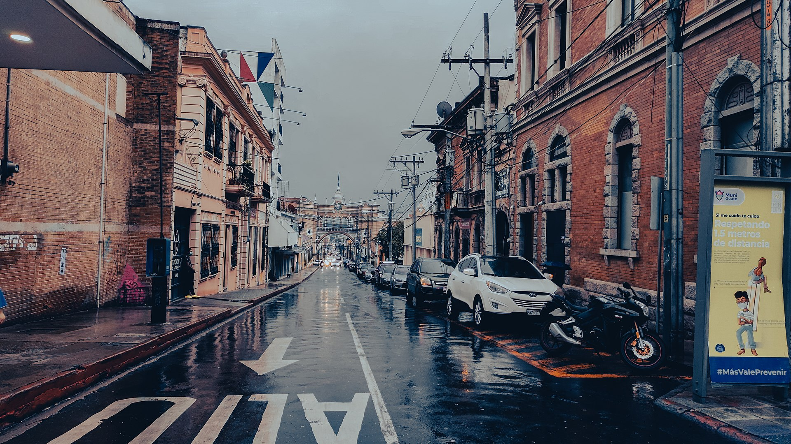
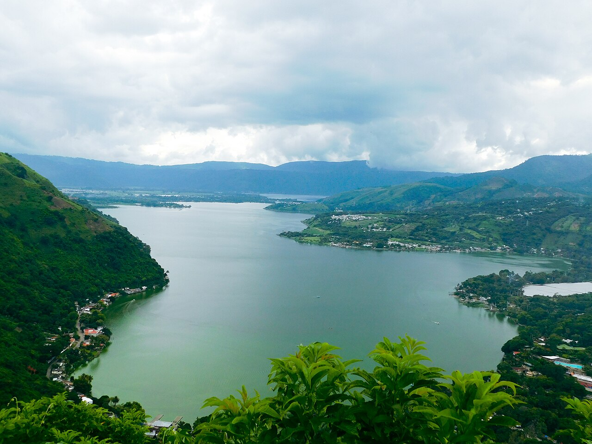
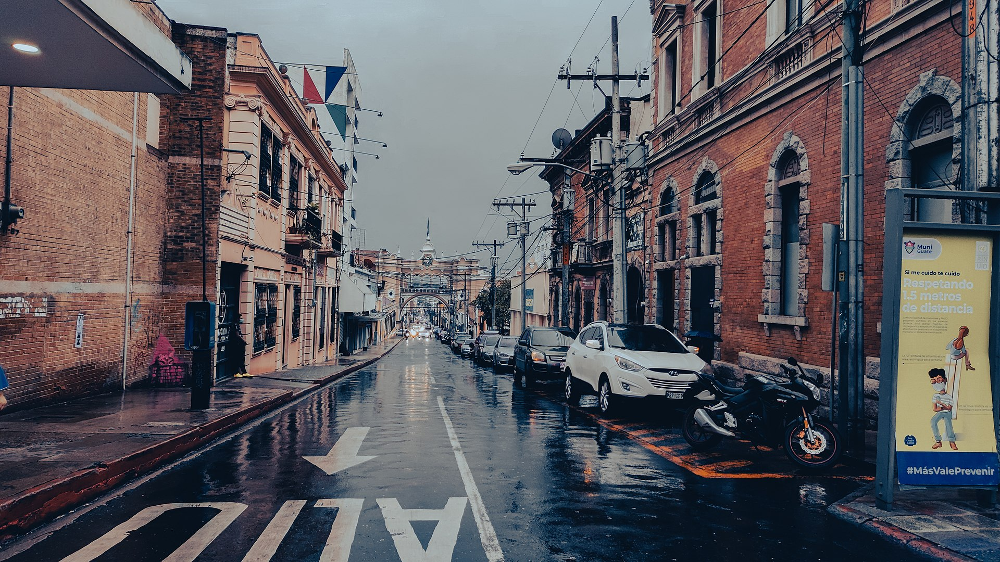
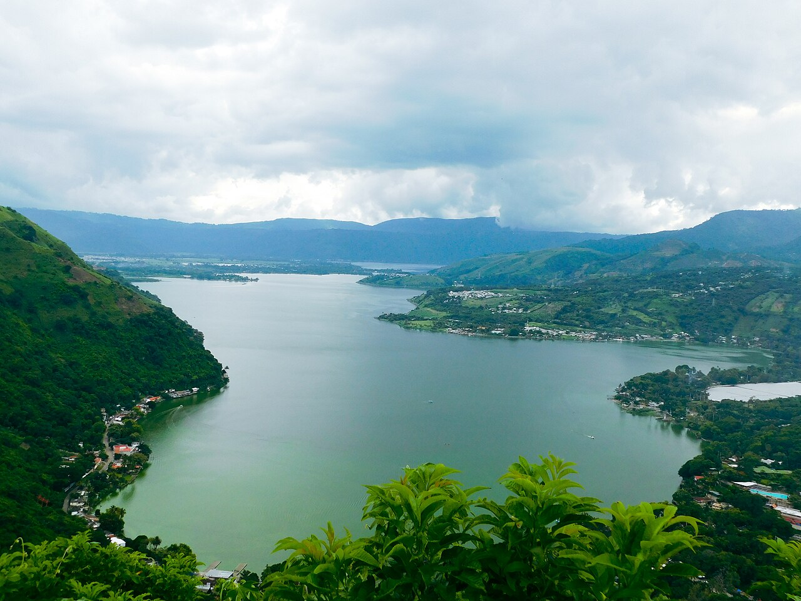

Region Metropolita
Guatemala
La Región Metropolitana de Guatemala es una conurbación integrada por la Ciudad de Guatemala y varias ciudades cercanas ubicadas en el Departamento de Guatemala, con una población que alcanza un estimado de 3 500 000 habitantes (para 2020), siendo el núcleo urbano más grande de América Central y el Caribe. Dentro del AMG se utilizan una serie de denominaciones ("zonas", "municipalidades", áreas", "regiones"), para dar cuenta de distintas extensiones territoriales, entre las más pobladas se encuentran las ciudades dentro de la Mancomunidad Gran Ciudad del Sur. El Espacio urbano del AMG abarca toda su mancha urbana, con una frontera que se mueve con el tiempo y no respeta las delimitaciones político-administrativas, abarcando todo el Departamento de Guatemala y la superficie total o parcial de otras localidades en los departamentos de Escuintla y Sacatepéquez. La superficie varía según se limite el área al Departamento de Guatemala o a la mancha urbana.
 


